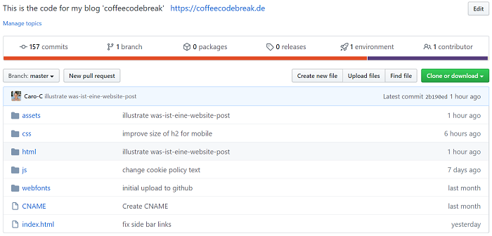

The great thing about programming is that you can see the result immediately.
I love beautiful things and when I discovered CSS, I could hardly get away from my laptop.
But until then my work was only available on my own laptop.
Since I wanted to share my enthusiasm and all these beautiful results, the whole thing somehow had to be put on the Internet.
Dynamic and static websites
In my last post How I built this blog I told you about the basic building blocks for a static website. 'Static' because you create a separate HTML file with its own code for each page or subpage of your website. Remember: in an HTML file you simply write the content you want your website to show - for example this text. When your users visit your static website, they will see exactly what you have programmed for each page. The languages HTML, CSS and JavaScript are already sufficient for this. More precisely, you can even program such a page with HTML alone.Dynamic websites, on the other hand, are, as the name suggests, more flexible. Behind these are, for example, databases or entire content management systems (CMS). Structures in which you can store and manage your blog posts, photos, etc. When someone requests your website, the content for the desired page is first put together individually before it is sent to them. For you this has the advantage that you have much less effort with your website. You can also interact with the visitors of your website. For example, you can run an online shop where your visitors can create an account and order your products.
With static websites this is not possible. The disadvantage of static websites is that you really have to change everything manually in your code. So if I make a visual adjustment in my drop-down menu, I have to make it in every single file I wrote (for every single page you can visit where the drop-down menu is visible). Annoying! And definitely not a pleasant solution for a blog in the long run.
Static pages load faster though and it always depends on what you want to achieve with your page.
The web server
Actually I wanted to tell you how my beautiful code becomes a website. At the moment it is only available on my computer. So what do I have to do to share my site with everyone in the world? Basically, you need two things: a web hoster and a domain. That probably sounds pretty nerdy. But even behind these two terms there is not so much magic.In order for your visitors to be able to view your website on the Internet, you have to make it accessible to them somehow. This means that your code must be brought to a central location. More precisely, to a web server.
A web server is a computer that is able to serve requests from browsers. When you access a website from your browser, it sends a request to the correct web server. In other words, to the web server on which your files with your code are stored. The web server then answers your browser with all the information it needs to show you the desired website.
You don't need to own such a web server yourself. There are countless providers, so-called web hosters. Web hosters offer you a small space on their huge web servers for rent or for free. After you have rented a space on a web server, you can transfer your files to it. And now your website can be accessed from all over the world.
Wait - how does your visitor know how to access your website? And how exactly does your website get into their browser?
The domain
When you publish a website, you also need a domain. For example, that would be in my case coffeecodebreak.de. For domains there are numerous providers on the Internet as well. You can test on their pages whether your desired domain is already taken. If it is still available, you can buy this domain. This is quite easy and already starts at less than one Euro per month.Many web hosters also offer domains. If you didn't buy your domain directly from your web hoster, you still have to connect the two. And that was already everything! Anyone who enters your domain in their browser can access your website now.
The domain contains the 'key' that tells your browser which web server it must request your website from. In more technical terms, your domain is transformed into an IP address. This is the address of your web server. Your browser knows from the domain to which address it should send its request. It then takes the entire URL and sends it to the web server where your files are located.
The entire URL because you are not always on the home page of coffeecodebreak.de. Right now your browser probably shows coffeecodebreak.de/html/reads-en.html/get-a-website-to-the-internet.html. In my post How I built this blog I told you that your HTML, CSS and JavaScript files are stored in a folder structure. And exactly this folder structure you can follow here. 'html' is a folder that is located in my main folder. This folder contains the folder 'reads' and in this folder I put the HTML file 'how-to-build-a-website.html'. And in this file I wrote the HTML code you need to read this post.
So your browser sends the complete path to the IP address and thus to the web server where my files are located. And the web server responds to your browser by sending you all the files it needs to show you exactly this website. The URL with my folder and file names tells it which page you have requested. How your browser finally turns the code into the website I explain in my blog post What turns code into a website?.
How I have implemented it myself
That was a lot of information. To summarize it all for you, I want to tell you how I went about it myself.1. Create a Github account
In my Udacity course, with which I learned programming, Github Pages was introduced. Github is a collaboration platform where many millions of software developers are registered and work together on code. Github Pages is a free offer from Github to host a static website on their web server. In return, my code is publicly available on Gitbhub. This means any registered user can view it. So first of all I created an account on Github.2. Create a respository
Looking back, it's easy to bring a website online through Github Pages. But due to my beginner mistakes it took me quite some time.In short, you upload your files (your code) to a so-called 'repository'. This is like a folder that has the ingenious feature of being able to manage different versions of your code. So nothing gets lost when you make changes. My folder structure, which I had already created on my laptop as a git repository (also for versioning), was transferred to my Github repository. This is exactly the same folder structure that is shown in the URL of each page of my blog. Here is a picture of my Github repository:

3. Activate Github Pages
Once you've managed to successfully load the files into your repository, there's only one simple, small step left. There is a Github Pages section in the repository settings. You have to check this box. And voilá - the website is online!4. Buy a domain
Github automatically gives your website a domain. This domain is always called something with ...github.io. You don't have to keep Github's domain though and as I liked coffeecodebreak.de more, I bought it from a domain provider.5. Connect the domain with the website
I then connected the domain with my website. I did this by linking my domain 'coffeecodebreak.de' with the IP address of the Github server at my domain provider. You can find the IP address on the Github website. You just copy it and add it to your domain in your domain account.On the other hand, I had to tell my web server that my website, which was previously called with the github.io name, is now requested with the domain coffeecodebreak.de. For this I had to create a small file called CNAME in my repository, where I entered my domain. And that was it!
In my domain coffeecodebreak.de there is now the information of the IP address of the web server my files are stored on. At the same time my web server knows what to look for when it receives a request for my website. It finds my files and sends them back to your browser. And that's how my website gets into your laptop, mobile phone or any other device with which you call it up. Actually quite easy! :)
I hope you enjoyed this post and learned a little bit.
See you soon!
Caro
Leave a comment
Feel free to leave me a comment. Your e-mail address will not be published. The fields marked with a * have to be filled out to send the comment. It may take a few hours until your comment is published.